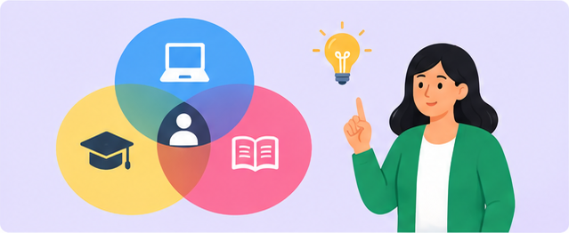

- Compartir previamente el enlace de la reunión.
- Comprobar el funcionamiento del audio y el video.
- Explicar cómo se utilizarán el chat y las herramientas de participación.
- Dar lugar a las preguntas y a la intervención de los estudiantes.
- Utilizar la opción de compartir pantalla cuando aporte a la explicación.
- Mantener un trato respetuoso y cuidar la privacidad de los participantes.
Las herramientas disponibles pueden variar según la cuenta, la configuración y los permisos del organizador.
